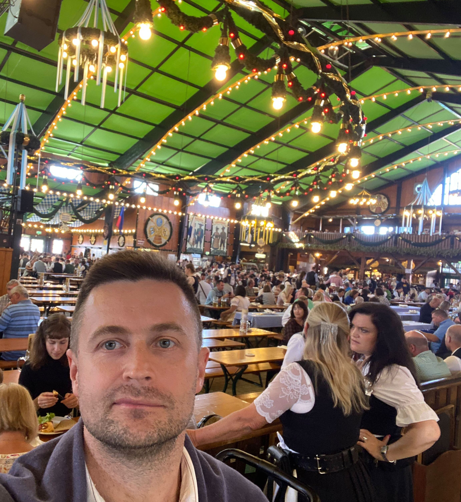
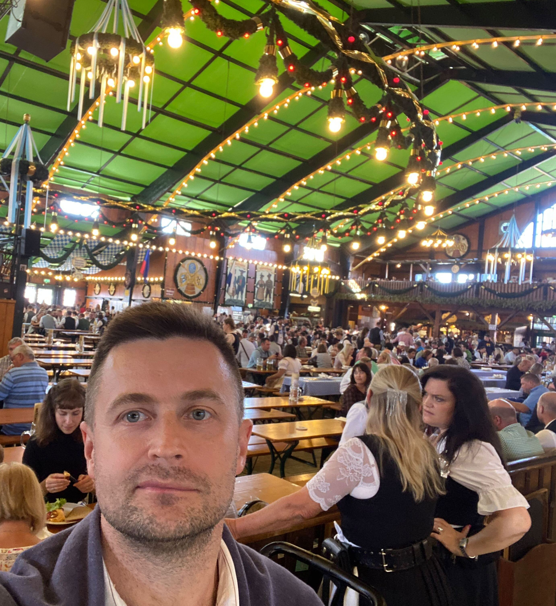
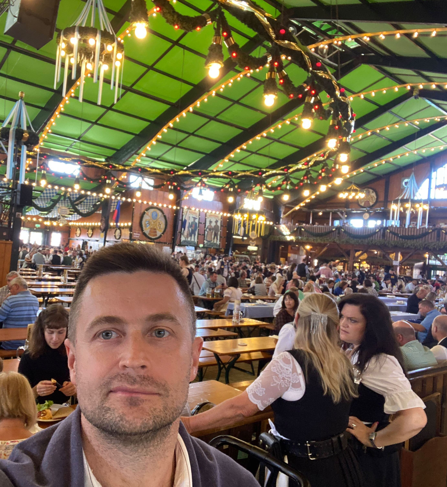

All models are wrong, but some of them are useful . George Box (British statistician)

I am an research fellow at Voronezh State University of Forestry and Tehnologies (VSUFT) in Voronezh, Russia.
My research concentrates on time series analysis with a focus on price transmission on agricultural markets. Details are available via page with my publications.
I have been really interested in economics since school. After graduating from school, I entered
Voronezh State Agrarian University (VSAU) , Faculty of Economics. The VSAU faculty of Economics is the oldest of all the economic faculties in Voronezh and the largest scientific center of education and research in different fields of economics in the Central-Black Earth Region in Russia. In 2002 I graduated from the University with M.Sc.in Economics (Diploma, Honor's degree). I received my Ph. D. in economics (the first academic degree
"Candidate of Economic Sciences" in Russia) from Voronezh SAU in November 2005.
During the period of 2014-2020, I visited UT(Estonia), SLU(Sweden), CAU, JLU(Germany) and Slovak University of Agriculture(Slovakia) to do research within various European and national mobility programmes.